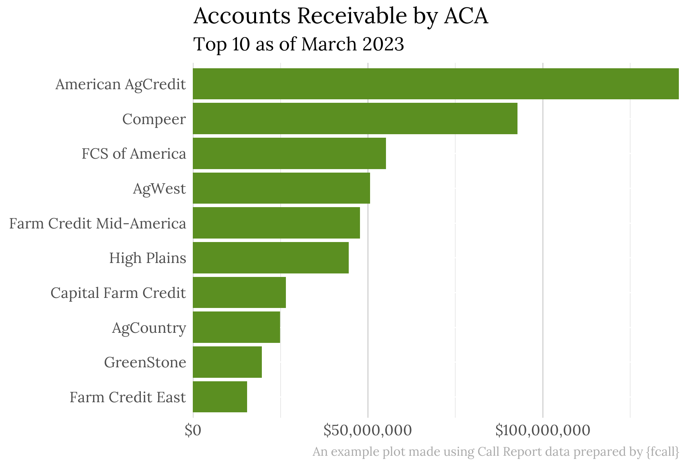

R package for parsing Farm Credit Administration (“FCA”) Call Report data into tidy R data frames.

Installation
You can install {fcall} from GitHub with:
# install.packages("devtools")
devtools::install_github("ketchbrookanalytics/fcall")Background
FCA publishes Call Report data on a quarterly basis at https://www.fca.gov/bank-oversight/call-report-data-for-download.
As of September 2023, this data represents a set of 72 .TXT files. These files represent 36 datasets. The files prefixed with “D_” contain metadata (the column names, data types, etc.) of the associated file containing the raw, header-less comma-separated data. For example, the file that starts with “D_INST” contains the metadata for the file that starts with “INST_”.
Further, some of these datasets are structured in a way that makes data analysis difficult. In these cases, we chose to pivot the data to make it more analysis-friendly. See Metadata File Scenarios for a more in-depth discussion of when and how this pivoting took place.
This package provides 3 utility functions:
-
download_data()allows users to programmatically download (and unzip) data from a specific quarter -
process_data()parses the data from these unzipped .TXT files into a list of R data frames containing the Call Report data and file metadata -
compare_metadata()compares two sets of Call Report data from different quarters
Downloading Data
You can download data for a particular period using download_data():
# Download FCA Call Report data from March 2023
download_data(
year = 2023,
month = 3,
dest = "path/to/some/folder"
)Process Files
You can parse the data from the downloaded .TXT files into tidy R data frames using process_data():
# Process data from March 2023
data_2023_03 <- process_data(folder = "path/to/some/folder")You can also use process_metadata_file() and process_data_file() to process single metadata and data files, respectively.
Note: process_data() has only been tested by the development team on Call Report data from March 2020 to present. Please let us know if you find issues with processing data older than 2020.
Comparing Metadata from Different Periods
The FCA Call Report data has changed over time, making it difficult to perform analysis across multiple periods. To ensure that such comparisons can be made safely, the compare_metadata() returns differences in the data structure (files, column names, and column definitions) between two sets of FCA Call Report data.
# Download data from June 2023
download_data(
year = 2023,
month = 6,
dest = "path/to/some/other/folder"
)
# Compare metadata files from March and June 2023
compare_metadata(
dir1 = "path/to/some/folder", # where we downloaded the March 2023 data
dir2 = "path/to/some/other/folder"
)Internal Datasets
fcall contains with the following internal datasets:
-
file_metadatacontains a short description about each file. - The remaining datasets represent a set of “lookup table” dictionaries for the mapping between integer codes in the raw data and their plain-English description in the associated metadata. These datasets follow the naming convention
<file>__<column>, wherefileis the name of the raw data file andcolumnis the name of the column in the associated metadata file for which the dataset provides the codes/definition mapping. For example, theRCBCall Report data includes the columnINV_CODE; theRCB__INV_CODEinternal dataset in {fcall} provides the mapping between these integer codes and the associated plain-English definitions for each.
To streamline data retrieval and usage, a dedicated function named get_codes_dict() has been integrated into the package. This function allows users to load code dictionaries effortlessly by providing only the data name, without the need to specify the exact variable name:
# Get codes dictionary information for "RCB" data
rcb_dict <- get_codes_dict("RCB")
# Access codes dictionary
rcb_dict$codes_dict
# Access associated codes variable name
rcb_dict$codes_varnameDatabase
Ketchbrook Analytics has also created a PostgreSQL database to store historical FCA Call Report data in a traditional, relational schema that aligns with the output data frame structure resulting from running process_data(). This database allows users to execute SQL queries to easily analyze Call Report data across multiple quarters.
Please, reach out to info@ketchbrookanalytics.com if you would like access to this database.
Once you are provided with credentials (in the form of a config.yml file) to access the SQL database, the following code can be used to establish a connection to the database from R:
# Get config
config <- config::get(config = "user")
# Connect to database
conn <- DBI::dbConnect(
drv = RPostgres::Postgres(),
dbname = config$database,
host = config$host,
port = config$port,
user = config$username,
password = config$password
)Note that you can connect to the database from any tool you choose (Excel, Power BI, etc.); you are not limited to connecting to the database from R.
Data Structure
The information about each dataset is spread across two files, a metadata file and a data file:
- The metadata file contains information about the columns in the data file, as well as lookup table(s) for translating integer codes found in certain columns of the data file into plain-English descriptions (if applicable)
- The data file contains the actual raw, comma-separated Call Report data, without headers
Metadata file names start with “D_”. We can use the file naming conventions to link each metadata file with its corresponding data file.
Metadata Files
Each metadata file, in essence, contains the following information about the variables in the corresponding data file:
- Variable name
- Field type
- Decimal positions
- Variable description
Metadata is stored by FCA in a way that is not straightforward to process:
- Each metadata file has a description header that can span across multiple lines
- Information about a variable is not stored in a single line, as variable descriptions can span across multiple lines (in an inconsistent way)
- Some metadata files have variable names that are preceded by two asterisks (**). These asterisks are used to denote multiple-occurrence columns and the first of them corresponds to a variable that stores codes. Files with multiple-occurrence columns end with a NOTE that can span across multiple lines.
Nevertheless, there are some features of metadata files that come in handy:
- Variable names are a single word (i.e., variable names are not separated by spaces)
- Field type is either “Numeric” or “Alphanum.” and is always placed after a variable name
- Decimal position is a single-digit integer that is always placed after field type.
These features allow us to use regular expressions to process metadata files.
Metadata File Scenarios
For the purposes of parsing files to create tidy data frames, the metadata files are classified into the following unique scenarios:
- Scenario 1: All variables are single-occurrence (i.e., no variable is preceded by two asterisks). This scenario is referred to as “single”.
- Scenario 2: A set of single-occurrence variables is followed by a set of multiple-occurrence variables. This scenario will be referred as “single_multiple”.
- Scenario 3: A set of single-occurrence variables followed by a set of multiple-occurrence variables is followed by a second set of single-occurrence variables. This scenario will be referred as “single_multiple_single”.
This classification is important because the corresponding data file will have a different structure depending on the scenario.
Data Files
In general terms, the processing workflow of data files involves:
- Reading data
- Applying column names
- Performing pivot operations (if necessary)
Specific pivot operations depend on the scenario of the corresponding metadata file
Scenario 1 (“single”)
This is the simplest scenario. The data in the data file is already in the expected format, and the only task is to apply the column names specified in the metadata file.
Scenario 2 (“single_multiple”)
In this case, the data in the data file does not adhere to “tidy” principles. The multiple-occurrence columns are repeated for each class within the “code” variable. To help clarify the previous statement, consider a data file has following (mock) column names:
ColumnAColumnBCode1Metric1_Code1Metric2_Code1Code2Metric1_Code2Metric2_Code2
The corresponding metadata file would likely list the column names as:
ColumnAColumnBCodeMetric1Metric2
This creates a mismatch between the number of columns identified in the metadata file (5) and the number of columns in the corresponding data file (8). To properly apply column names to the data file, the total number of distinct codes in the Code column must be determined. Once the column names have been appropriately applied to the data file, we complete the data processing by applying both long and wide pivots.
Scenario 3 (“single_multiple_single”)
This is the most complex scenario, currently applicable to only one data file (RCR7). Unlike Scenario 2, there is an additional set of single-occurrence columns that follow a set of multiple-occurrence columns. For each observation in the data file, there is a row that contains comma-separated values of variables that belong to the first set of single-occurrence columns, followed by a row for each class of the ‘code’ variable with comma-separated values of multiple-occurrence variables, and finally, a row that contains comma-separated values of the remaining single-occurrence columns.
In this case, the initial step of reading the data involves concatenating lines corresponding to the same observation (using loops). Once the data is read, the processing is similar to Scenario 2, except when naming the columns it is necessary to consider that the repeating columns are in the middle of the dataset. After naming the columns, the processing is the same as in Scenario 2. The resulting dataset differs from the metadata file in that it places all single-occurrence columns at the beginning.